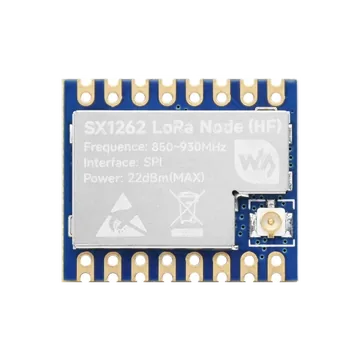

The pictured Core1262-HF is specified for 850–930 MHz. Firmware configuration does not retune the module matching network.
LoRa packet radio
SX1262 ESP32 LoRa wiring, pinout and radio tools
Wire an SX1262 module to ESP32 or ESP32-S3 for raw LoRa packet send and receive, RSSI and CAD checks, frequency scans, LittleFS captures and Meshtastic packet analysis.
This page follows the new ESP32 Bit Pirate LoRa implementation and uses the Waveshare Core1262-HF as a concrete 868/915 MHz reference module. Match the exact RF band, pinout and antenna of the board on your bench before transmitting.
- SX1262 pinout
- ESP32 wiring
- LoRa
- Meshtastic analysis

module photos
Core1262 photos and pinout reference
Compare the shield marking, castellated pads, U.FL antenna connector and rear labels with your module. The pictured HF version is matched for 850–930 MHz; other SX1262 boards can use a different pin order, RF switch or oscillator circuit.
implementation defaults
SX1262 ESP32 wiring used by LoRa mode
These GPIO numbers come from the supplied implementation. Confirm that they are free on the selected ESP32 board and change the LoRa configuration when its board mapping differs.
| Core1262 / SX1262 signal | ESP32 Bit Pirate default | Check before use |
|---|---|---|
| 3V3 | Stable 3.3 V | Use a 3.3 V supply with common ground; do not apply 5 V logic. |
| GND | Common ground | Connect the ESP32 and radio grounds before signal wires. |
| CLK / SCK | GPIO5 | SPI clock; keep the connection short. |
| MISO | GPIO6 | Radio-to-ESP32 SPI data. |
| MOSI | GPIO7 | ESP32-to-radio SPI data. |
| CS / NSS | GPIO4 | Dedicated active-low chip select. |
| RESET / NRESET | GPIO3 | Active-low hardware reset used during probe and initialization. |
| BUSY | GPIO2 | The host waits for BUSY to return low before radio commands. |
| DIO1 | GPIO1 | Interrupt line used for TX, RX, timeout and CAD events. |
| DIO2 / RF switch | Module-managed | The implementation enables SX1262 DIO2 RF-switch control; a compatible module must route it correctly. |
| DIO3 / TCXO | Module-managed, 1.8 V default | The implementation enables DIO3 TCXO control when TCXO voltage is above 0 V. |
| ANT / U.FL | Band-matched antenna | Attach a suitable antenna before transmission and match it to the physical module band. |
receive-first workflow
Probe SX1262, inspect the profile, then listen
Start with status, RSSI and CAD checks before any packet transmission. Two nodes must use matching LoRa modem settings to exchange raw packets.
- 01
Connect a band-matched antenna, then wire 3.3 V, ground, SPI, RESET, BUSY and DIO1.
- 02
Enter
mode loraand completeconfigwith the default pins or the GPIO mapping for your board. - 03
Run
statusto verify the SX1262 probe and review frequency, bandwidth, spreading factor and coding rate. - 04
Use
rssiorcad, then startreceivefor a known transmitter using the same profile. - 05
Send, record or replay only with owned equipment in an authorized RF test setup and within local band, power and duty-cycle rules.
Example CLI flow
mode lora
config
status
rssi 1000
cad 1000
receiveThis receive-first sequence checks detection and channel activity before a controlled packet test.
signal summary
Core SX1262 control lines beyond SPI
SX1262 needs dedicated RESET, BUSY and DIO1 lines in addition to SPI. The selected module must also match the implementation's DIO2 RF-switch and DIO3 TCXO control.
Wiring View
The default profile requests 1.8 V DIO3 TCXO control. Set TCXO to 0 only for compatible XTAL-based hardware.
The current driver enables DIO2 antenna-switch control, matching modules such as Core1262 that route DIO2 to their RF switch.
Always attach the correct antenna before transmitting. Follow the frequency, power and duty-cycle limits for your region and keep experimental transmissions to owned, authorized systems.
firmware defaults
Default SX1262 LoRa modem settings
The implementation stores the whole radio profile with a recorded .lora packet so a later load can restore the capture settings before replay.
| Setting | Default | Config support in this implementation |
|---|---|---|
| Frequency | 868.0 MHz | 150–960 MHz in the UI; stay inside the physical module and legal regional band. |
| Bandwidth | 125 kHz | 125, 250 or 500 kHz. |
| Spreading factor | SF9 | SF6 through SF12. |
| Coding rate | 4/7 | 4/5 through 4/8. |
| TX power | 14 dBm | -9 through +22 dBm, subject to module and local limits. |
| Preamble | 8 symbols | 6 through 65535 symbols. |
| Packet options | CRC on, normal IQ | CRC and IQ inversion are configurable. |
| Sync word | Private LoRa register value 0x1424 | Configurable; both ends must use compatible values. |
| Oscillator | 1.8 V TCXO | XTAL mode or supported DIO3 TCXO voltages from 1.6 V to 3.3 V. |
LoRa shell
SX1262 packet, scan and analysis commands
The new mode covers raw packet work, RF observation, capture files and a dedicated Meshtastic analysis shell. Payloads are limited to 255 bytes by the SX1262 service.
Packet send and receive
send accepts text or hex{ AA } payloads. receive prints payload bytes with ASCII, RSSI and SNR; spam repeats controlled test payloads.
Observe channel activity
Use rssi, ear, scan, waterfall and cad to inspect energy and LoRa activity with the selected modem profile.
Capture and replay
record writes a received packet and its profile to a LittleFS .lora file. load validates the file, restores the profile and transmits its payload.
Profile and airtime
config changes pins and modem parameters, setfreq changes frequency, status summarizes the active setup and airtime estimates packet time-on-air.
Meshtastic analysis
meshtastic opens preset, key and packet-inspection tools for compatible frames, including decoded text, position, node information, telemetry and routing metadata.
Controlled RF testing
The shell also includes bounded continuous-wave and repeated-transmit lab functions. Use them only in an isolated or shielded authorized setup; they can interfere with nearby radio services.
guided workflow
Build and validate a complete LoRa lab path
Follow the six tasks in order: prove the electrical connection, establish a profile, validate receive and transmit, observe the band, then preserve a repeatable packet fixture.
1. Wire the SX1262
Connect SPI, RESET, BUSY and DIO1, then confirm State: ready.
Match frequency, BW, SF, CR, packet options and oscillator settings.
3. Receive a LoRa packetProgress from RSSI to CAD, then inspect payload, RSSI and SNR.
4. Send one LoRa packetEstimate airtime and verify a controlled text or binary payload on a known peer.
5. Scan frequency activityInterpret RSSI hits and use the on-device waterfall without confusing energy with decoding.
6. Record and load a packetPreserve profile, metrics and payload in a validated LittleFS .lora file.
what it is
What SX1262 LoRa mode is used for
SX1262 is a Sub-GHz LoRa and (G)FSK transceiver. This ESP32 Bit Pirate mode focuses on raw LoRa modem configuration, packet exchange, signal observation and capture analysis. Raw LoRa packets are not automatically LoRaWAN: joining a network, managing session keys and talking to a LoRaWAN network server require a separate LoRaWAN stack.
practical value
Why use SX1262 with ESP32 Bit Pirate
The LoRa shell puts wiring, radio profiles, receive metrics, frequency scans, CAD, LittleFS packet files, airtime estimates and Meshtastic inspection behind one CLI. That makes it useful for repeatable bench diagnostics without hiding the modem settings that determine whether two LoRa nodes can communicate.
common symptoms
Common SX1262 LoRa module problems
Most failures come from the wrong RF variant, mismatched modem profiles, BUSY/DIO1 wiring, the wrong TCXO mode or transmitting without a suitable antenna.
Probe fails
Check 3.3 V, common ground, SCK/MOSI/MISO, CS, RESET and BUSY. The implementation resets the radio and verifies its LoRa sync-word registers.
No packets received
Match frequency, bandwidth, spreading factor, coding rate, sync word, CRC and IQ mode on both nodes, then verify DIO1 and the antenna.
Weak or unstable link
Confirm the antenna and module match the selected band, shorten digital wiring, use a stable supply and select the correct TCXO or XTAL mode.
pages and sources
Useful SX1262 next pages
Continue with the LoRa protocol overview, practical recipes, the SPI reference, a supported ESP32-S3 board, browser serial access or the official module documentation.
LoRa protocol
Connect the SX1262 hardware to packet, signal, capture and Meshtastic analysis workflows.
Vision Master T190Use the board-specific guide for its display, buttons and optional onboard SX1262 radio mapping.
All recipesFind this LoRa batch alongside the complete practical recipe library.
SPI protocolBus reference for SCK, MOSI, MISO and chip-select checks.
ESP32-S3 DevKitBoard page for checking available GPIO before LoRa wiring.
Web Serial TerminalDrive the LoRa shell from a compatible browser over serial.
Web FlasherInstall a current ESP32 Bit Pirate build from the browser.
Core1262 wikiOfficial pinout, RF-band, TCXO and RF-switch information.
Semtech SX1262Official transceiver product and documentation entry point.
Hardware ecosystemAdapters, voltage notes and physical bench context.
All modulesReturn to the ESP32 Bit Pirate module directory.
module-specific answers
SX1262 LoRa module FAQ
Quick answers about compatibility, default ESP32 pins, physical RF bands, raw LoRa versus LoRaWAN and Meshtastic analysis.
Can ESP32 Bit Pirate use an SX1262 LoRa module?
Yes. The LoRa mode in the current implementation targets SX1262 hardware over SPI and uses RESET, BUSY and DIO1 control lines.
Which ESP32 pins does the default LoRa configuration use?
The defaults are SCK GPIO5, MISO GPIO6, MOSI GPIO7, CS GPIO4, RESET GPIO3, BUSY GPIO2 and DIO1 GPIO1.
Is raw LoRa packet mode the same as LoRaWAN?
No. Raw LoRa packet send and receive does not perform LoRaWAN joining, session management or network-server communication.
Can a Core1262-HF module be used at 433 MHz?
No. The pictured Core1262-HF RF matching is specified for 850–930 MHz. A firmware frequency setting cannot change the module RF matching; select a module and antenna built for the intended regional band.
What does the Meshtastic command do?
It opens an analysis and interoperability shell with Meshtastic modem presets and packet inspection. It does not turn raw LoRa mode into a managed Meshtastic node automatically.

project
SX1262 LoRa inside ESP32 Bit Pirate.
This module page connects the new LoRa firmware implementation to concrete Core1262 wiring, radio-profile checks, packet captures and controlled RF analysis.